14 Typy wykresów
Gramatyka grafiki opisuje wykres jako złożenie niezależnych elementów (Rozdział 13). Najczęściej stosowane złożenia mają własne nazwy: histogram, wykres pudełkowy, wykres rozrzutu. Rozdział porządkuje te nazwy według klasyfikacji wykresów i dla każdej kategorii wymienia należące do niej typy wykresów wraz z objaśnieniem. Kod wykresów stosowanych w skrypcie zawiera Załącznik A.
14.1 Klasyfikacja wykresów
Wilke (2019) w rozdziale „Directory of visualizations” dzieli wykresy na sześć kategorii według tego, co wykres przedstawia. Jest to jedna z możliwych klasyfikacji: Holtz i Healy (2018) w From Data to Viz porządkują wykresy według rodzaju danych (Sekcja 14.2), a Sekcja 17.3 zestawia je według cechy graficznej, która przedstawia wartość. Dalsza część rozdziału stosuje klasyfikację Wilkego (2019).
| Kategoria | Co przedstawia wykres | Przykład pytania |
|---|---|---|
| ilości (amounts) | wartości liczbowe przypisane do kategorii | Jaki PKB per capita miały wybrane kraje w 2007 roku? |
| rozkłady (distributions) | częstość występowania wartości zmiennej ilościowej | Jak rozkładała się oczekiwana długość życia krajów świata? |
| proporcje (proportions) | podział całości na części | Jaki był udział grup dochodowych wśród krajów kontynentu? |
| relacje (x–y relationships) | związek jednej zmiennej ilościowej z drugą, w tym zmianę wartości w czasie | Czy oczekiwana długość życia zależy od PKB per capita? |
| dane przestrzenne (geospatial data) | wartości zmiennej w ich położeniu geograficznym | Jak rozmieszczone są kraje o najniższej oczekiwanej długości życia? |
| niepewność (uncertainty) | zakres prawdopodobnych wartości oszacowania albo pomiaru | W jakim zakresie mieści się wartość współczynnika korelacji w populacji? |
Każda z kolejnych sekcji zawiera piktogramy typów wykresów i tabelę z objaśnieniami. Piktogramy są schematyczne: przedstawiają dane symulowane, a mapy — wartości symulowane dla województw. Tabela podaje w nawiasie przy polskiej nazwie wykresu nazwę angielską z katalogu Wilkego (2019), według której można szukać przykładów w źródłach. Objaśnienie kończy się nazwą funkcji ggplot2 potrzebnej do wykonania wykresu; funkcja z innego pakietu jest zapisana z jego nazwą (pakiet::funkcja()). Kolumna „Przykłady i kod” zawiera odnośnik do The R Graph Gallery (Sekcja 19.2) i odesłanie do sekcji załącznika z kodem; podany jest ten z nich, który istnieje, a myślnik oznacza brak obu.
14.2 Klasyfikacja From Data to Viz
From Data to Viz (Holtz i Healy, 2018) jest klasyfikacją typów wykresów według formatu danych wejściowych. Ma postać drzewa decyzyjnego, które prowadzi od rodzaju danych do wykresów odpowiednich dla tych danych (Rycina 14.1). Wersja interaktywna znajduje się na stronie https://www.data-to-viz.com/#explore. Pierwszy poziom drzewa obejmuje sześć rodzajów danych:
| Rodzaj danych | Znaczenie |
|---|---|
| Numeric | zmienne liczbowe |
| Categoric | zmienne jakościowe |
| Num & Cat | zmienne liczbowe i jakościowe |
| Maps | dane przestrzenne |
| Time series | szeregi czasowe |
| Network | dane o powiązaniach między obiektami |
Dalsze rozgałęzienia zależą od struktury danych. Dla danych liczbowych są to m.in. liczba zmiennych, uporządkowanie obserwacji i liczba punktów. Strona zestawia też wykresy według ich zastosowania: rozkład (Distribution), korelacja (Correlation), ranking (Ranking), część całości (Part of a whole), zmiana w czasie (Evolution), mapa (Map) i przepływ (Flow).
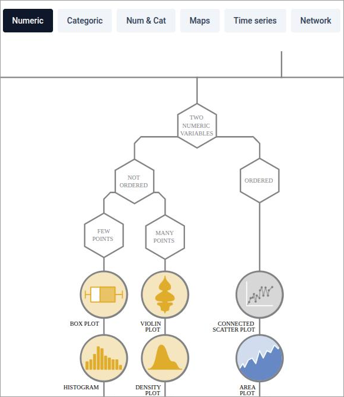
14.3 Ilości
Wykresy ilości przedstawiają wartości liczbowe przypisane do kategorii. Podstawowe wykresy (Rycina 14.2) wykorzystują jedną zmienną jakościową i jedną zmienną ilościową. Jeśli kategorie określają dwie zmienne jakościowe, słupki grupuje się albo układa jeden na drugim, a kategorie można też przypisać do osi x i y i przedstawić wartość barwą (Rycina 14.3).
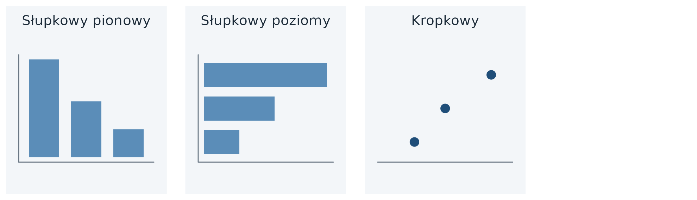
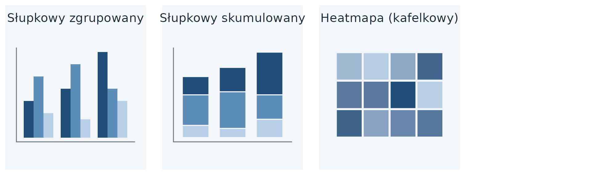
| Wykres | Objaśnienie | Przykłady i kod |
|---|---|---|
| słupkowy (Bars) | wysokość albo długość słupka odpowiada wartości kategorii; słupki mogą być pionowe albo poziome; oś wartości zaczyna się od 0 (Sekcja 12.5); słupki porządkuje się według wartości, chyba że kategorie mają ustalony porządek, np. lata. Funkcja: geom_col() |
galeria; Sekcja A.3.1 |
| kropkowy (Dots) | punkt znajduje się w miejscu, w którym kończyłby się słupek; oś wartości nie musi zaczynać się od 0; różnice między kategoriami są lepiej widoczne niż na wykresie słupkowym; kategorie porządkuje się według wartości. Funkcja: geom_point() |
galeria (wykres lizakowy); Sekcja A.3.4 |
| słupkowy zgrupowany (Grouped Bars) | na każdej pozycji osi znajduje się grupa słupków, a w grupie — słupki kategorii drugiej zmiennej; alternatywą jest wykres wielopanelowy. Funkcja: geom_col(position = "dodge") |
galeria; Sekcja A.3.2 |
| słupkowy skumulowany (Stacked Bars) | słupki kategorii drugiej zmiennej są ustawione jeden na drugim; wysokość całego słupka jest sumą, stosuje się go, gdy suma ma znaczenie. Funkcja: geom_col(position = "stack") |
galeria; Sekcja A.3.3 |
| heatmapa (kafelkowy) (Heatmap) | kategorie znajdują się na osiach x i y, np. lata i państwa, a barwa kafelka przedstawia wartość; wykres nazywa się także mapą cieplną. Funkcja: geom_tile() |
galeria; Sekcja A.3.5 |
14.4 Rozkłady
Wykresy rozkładu przedstawiają, jak często występują wartości zmiennej ilościowej. Jeden rozkład (Rycina 14.4) przedstawia się zwykle histogramem albo wykresem gęstości. Oba wymagają arbitralnego wyboru parametru: szerokości przedziału albo stopnia wygładzenia. Dystrybuanta empiryczna i wykres kwantyl-kwantyl przedstawiają dane bez takiego wyboru, ale trudniej je odczytać. Do porównania rozkładów w wielu grupach służą wykresy z Rycina 14.5.
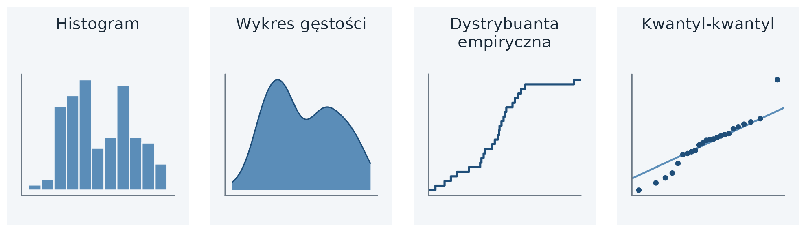
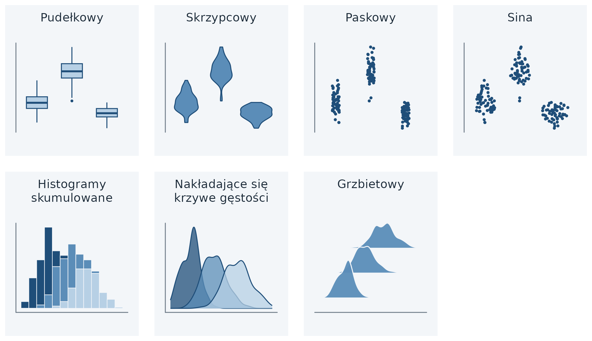
| Wykres | Objaśnienie | Przykłady i kod |
|---|---|---|
| histogram (Histogram) | zakres zmiennej dzieli się na rozłączne przedziały o równej szerokości; wysokość słupka to liczba obserwacji w przedziale; obraz rozkładu zależy od szerokości przedziału (Sekcja 15.1). Funkcja: geom_histogram() |
galeria; Sekcja A.4.1 |
| wykres gęstości (Density Plot) | rozkład w postaci ciągłej krzywej; może sugerować występowanie wartości tam, gdzie danych nie ma, szczególnie w ogonach rozkładu; przy kilku rozkładach jednocześnie jest lepszym wyborem niż histogram. Funkcja: geom_density() |
galeria; Sekcja A.4.2 |
| dystrybuanta empiryczna (Cumulative Density) | dla każdej wartości osi x podaje część obserwacji o wartości mniejszej bądź równej tej wartości; rośnie skokowo od 0 do 1. Funkcja: stat_ecdf() |
Sekcja A.4.6 |
| kwantyl-kwantyl (Quantile-Quantile Plot) | porównuje dwa rozkłady przez wykreślenie ich kwantyli na osiach x i y; punkty rozkładów podobnych układają się wzdłuż linii y = x. Funkcja: geom_qq() |
— |
| pudełkowy (Boxplots) | mediana, kwartyle, wąsy i wartości odstające (Sekcja 15.3). Funkcja: geom_boxplot() |
galeria; Sekcja A.4.3 |
| skrzypcowy (Violins) | wykres gęstości obrócony o 90° i odbity lustrzanie; szerokość odpowiada gęstości; pokazuje rozkłady z kilkoma skupieniami, niewidoczne na wykresie pudełkowym. Funkcja: geom_violin() |
galeria; Sekcja A.4.4 |
| paskowy (Strip Charts) | każda obserwacja jest punktem na osi wartości; przy dużej liczbie punktów rozsuwa się je losowo w poprzek osi. Funkcja: geom_jitter() |
galeria (z wykresem pudełkowym) |
| sina (Sina Plots) | punkty rozsunięte w poprzek osi proporcjonalnie do ich gęstości; łączy cechy wykresu skrzypcowego i paskowego. Funkcja: ggforce::geom_sina() |
— |
| histogramy skumulowane (Stacked Histograms) | histogramy grup ustawione jeden na drugim; bywają mylone z histogramami nakładającymi się, a wysokości słupków górnej grupy trudno porównać. Funkcja: geom_histogram() |
galeria |
| nakładające się krzywe gęstości (Overlapping Densities) | krzywe gęstości kilku grup na wspólnych osiach; służą do szczegółowego porównania niewielkiej liczby rozkładów. Funkcja: geom_density(alpha = 0.5) |
galeria; Sekcja A.4.2 |
| grzbietowy (Ridgeline Plot) | krzywe gęstości ustawione jedna nad drugą, ze wspólną osią x; służy do przedstawienia wielu rozkładów albo zmian rozkładu w czasie. Funkcja: ggridges::geom_density_ridges() |
galeria; Sekcja A.4.5 |
14.4.1 Konstrukcja dystrybuanty empirycznej
Dystrybuanta empiryczna (ang. empirical cumulative distribution function, ECDF) powstaje w trzech krokach. Przykład wykorzystuje 10 przykładowych wartości oczekiwanej długości życia: 70,1; 60,5; 82,0; 72,8; 80,2; 74,3; 65,2; 76,0; 78,5; 85,1.
- Wartości porządkuje się rosnąco: 60,5; 65,2; 70,1; 72,8; 74,3; 76,0; 78,5; 80,2; 82,0; 85,1.
- Dla każdej wartości oblicza się:
\[ \text{ECDF}(x_i) = \frac{\text{liczba wartości} \leq x_i}{\text{liczba wszystkich wartości}} \]
- Na osi x nanosi się wartości, a na osi y — wyniki. Dla wartości 72,8 wynik wynosi 4/10 = 0,4: 40% krajów ma oczekiwaną długość życia mniejszą bądź równą 72,8 roku. Wartości ECDF rosną skokowo od 0 do 1.
14.5 Proporcje
Wykresy proporcji przedstawiają podział całości na części, np. udział grup dochodowych wśród krajów kontynentu, udział kobiet i mężczyzn w liczbie ludności, odsetek głosów oddanych na partie polityczne albo udziały rynkowe firm. Wybór wykresu zależy od liczby podziałów: czy przedstawia się jeden podział (Rycina 14.6), kilka podziałów tej samej całości, np. na kolejnych kontynentach (Rycina 14.7), czy podział według kilku zmiennych jakościowych (Rycina 14.8).
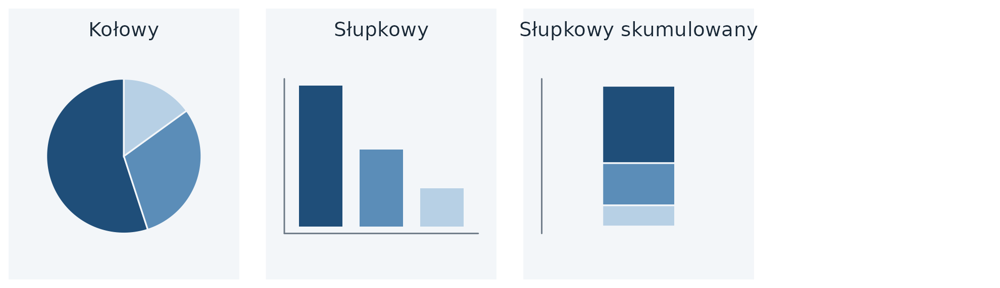
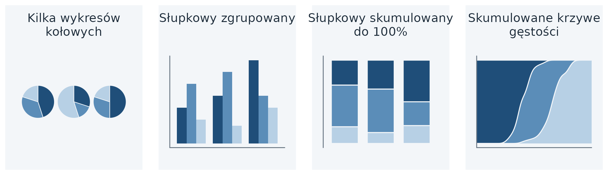
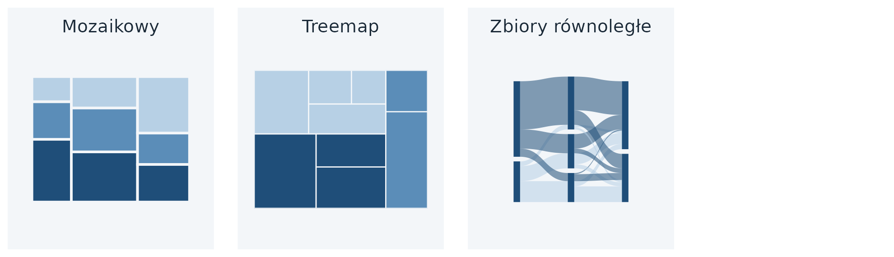
| Wykres | Objaśnienie | Przykłady i kod |
|---|---|---|
| kołowy (Pie Chart) | kąt wycinka przedstawia udział kategorii; wykres podkreśla, że części składają się na całość (Sekcja 12.7). Funkcja: geom_col() + coord_polar(theta = "y") |
galeria; Sekcja A.5.3 |
| słupkowy (Bars) | wysokość słupka przedstawia liczność albo udział kategorii; poszczególne części porównuje się łatwiej niż na wykresie kołowym. Funkcja: geom_bar(), gdy słupki mają powstać przez zliczenie obserwacji w tabeli (każdy wiersz to jedna obserwacja); geom_col(), gdy tabela zawiera gotowe liczności albo udziały |
galeria; Sekcja A.5.1 |
| słupkowy skumulowany (Stacked Bars) | części ustawione jedna na drugiej; przy jednym podziale jest mało czytelny, sprawdza się przy porównaniu wielu podziałów. Funkcja: geom_col(position = "fill") |
galeria; Sekcja A.5.2 |
| kilka wykresów kołowych (Multiple Pie Charts) | jeden wykres kołowy dla każdego podziału; zajmuje dużo miejsca i utrudnia dostrzeżenie zależności między podziałami. Funkcja: geom_col() + coord_polar(theta = "y") + facet_wrap() |
— |
| słupkowy zgrupowany (Grouped Bars) | słupki części ustawione obok siebie w każdym podziale; sprawdza się przy umiarkowanej liczbie porównywanych podziałów. Funkcja: geom_col(position = "dodge") |
galeria; Sekcja A.3.2 |
| skumulowane krzywe gęstości (Stacked Densities) | udziały kategorii zmieniające się wzdłuż zmiennej ciągłej. Funkcja: geom_density(position = "fill") |
galeria |
| mozaikowy (Mosaic Plot) | prostokąty, których wysokość i szerokość przedstawiają udziały w dwóch zmiennych; zakłada, że każdą kategorię jednej zmiennej można połączyć z każdą kategorią drugiej. Funkcja: ggmosaic::geom_mosaic() |
— |
| treemap (Treemap) | prostokąt dzieli się na mniejsze, zagnieżdżone prostokąty, których pole przedstawia udział; podział jednej grupy może być zupełnie inny niż podział drugiej; np. kontynenty dzielone na państwa, pole odpowiada liczbie ludności, a kolor — grupie zamożności. Funkcja: treemapify::geom_treemap() |
galeria; Sekcja A.5.4 |
| zbiory równoległe (Parallel Sets) | podział całego zbioru według każdej zmiennej, a pasma pokazują powiązania podgrup; sprawdza się przy więcej niż dwóch zmiennych. Funkcja: ggforce::geom_parallel_sets() |
— |
Trzy najczęściej stosowane wykresy proporcji różnią się możliwościami odczytu (Tabela 14.1).
| Kołowy | Słupkowy skumulowany | Słupkowy zgrupowany | |
|---|---|---|---|
| wyraźnie przedstawia dane jako części całości | tak | tak | nie |
| umożliwia łatwe porównanie względnych proporcji | nie | nie | tak |
| podkreśla ułamki 1/4, 1/3, 1/2 | tak | nie | nie |
| sprawdza się, gdy całość dzieli się na wiele części | nie | nie | tak |
14.6 Relacje
Wykresy relacji przedstawiają związek jednej zmiennej ilościowej z drugą (Rycina 14.9) i uzupełniają analizę korelacji (Rozdział 11). Przy dużej liczbie obserwacji punkty nakładają się na siebie — zastępuje się je wtedy obrazem gęstości punktów (Rycina 14.10), a przy więcej niż dwóch zmiennych można przedstawić współczynniki korelacji zamiast samych danych. Jeśli oś x przedstawia czas, stosuje się wykresy liniowe (Rycina 14.11).
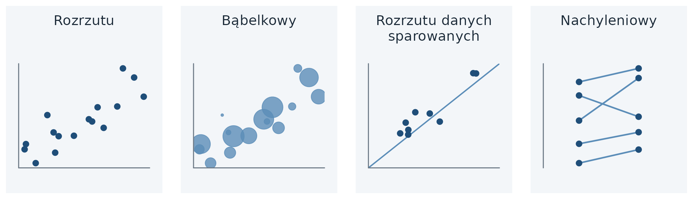
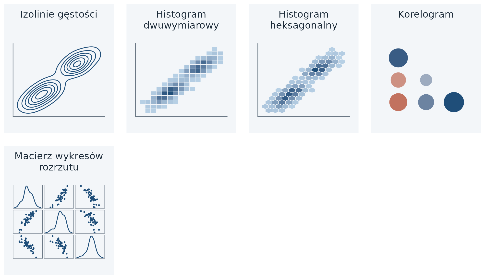
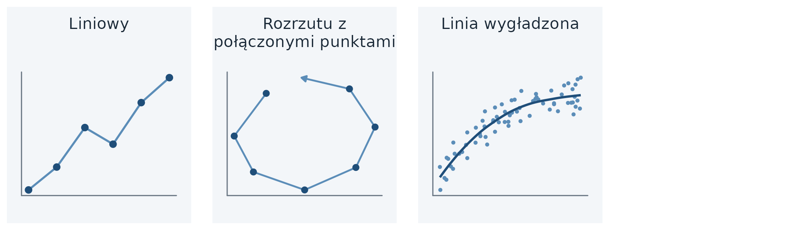
| Wykres | Objaśnienie | Przykłady i kod |
|---|---|---|
| rozrzutu (Scatterplot) | jedna obserwacja to jeden punkt, a jego położenie określają wartości dwóch zmiennych ilościowych; trzecią zmienną jakościową przedstawia kolor albo kształt, a ilościową — kolor albo wielkość (Sekcja 16.1). Funkcja: geom_point() |
galeria; Sekcja A.6.1 |
| bąbelkowy (Bubble Chart) | wykres rozrzutu, w którym wielkość punktu przedstawia trzecią zmienną ilościową. Funkcja: geom_point(aes(size = )) |
galeria; Sekcja A.6.1 |
| rozrzutu danych sparowanych (Paired Scatterplot) | obie osie przedstawiają wielkości w tych samych jednostkach, a linia x = y ułatwia porównanie pomiarów tej samej obserwacji. Funkcja: geom_point() + geom_abline() |
— |
| nachyleniowy (Slopegraph) | punkty ułożone w dwóch kolumnach; linie łączą pomiary tej samej obserwacji, a ich nachylenie pokazuje wielkość i kierunek zmiany. Funkcja: geom_line() + geom_point() |
— |
| izolinie gęstości (Density Contours) | linie łączą miejsca o jednakowej gęstości punktów. Funkcja: geom_density_2d() |
galeria |
| histogram dwuwymiarowy (2D Bins) | płaszczyzna podzielona na prostokąty; barwa przedstawia liczbę punktów w prostokącie. Funkcja: geom_bin_2d() |
galeria |
| histogram heksagonalny (Hex Bins) | jak histogram dwuwymiarowy, z podziałem płaszczyzny na sześciokąty. Funkcja: geom_hex() (wymaga pakietu hexbin) |
galeria |
| korelogram (Correlogram) | współczynniki korelacji wszystkich par zmiennych, przedstawione barwą albo wielkością znaku (Sekcja 16.2). Funkcja: GGally::ggcorr() |
galeria; Sekcja A.6.2 |
| macierz wykresów rozrzutu | wykres rozrzutu dla każdej pary zmiennych (Sekcja 16.3). Funkcja: GGally::ggpairs() |
galeria; Sekcja A.6.2 |
| liniowy (Line Graph) | linia łączy kolejne wartości; oś x przedstawia czas albo inną wielkość ściśle rosnącą. Funkcja: geom_line() |
galeria; Sekcja A.7.1 |
| rozrzutu z połączonymi punktami (Connected Scatterplot) | wykres rozrzutu dwóch zmiennych, w którym linia łączy punkty sąsiednich momentów czasu. Funkcja: geom_path() + geom_point() |
galeria |
| linia wygładzona (Smooth Line Graph) | gładka linia przedstawia trend w większym zbiorze danych. Funkcja: geom_smooth() |
galeria |
14.7 Dane przestrzenne
Mapa przenosi współrzędne z powierzchni Ziemi na płaszczyznę, tak aby kształty i odległości na mapie w przybliżeniu odpowiadały rzeczywistym (Rycina 14.12). Na mapie można przedstawić wartości przypisane obszarom albo położeniom. Przygotowanie danych i kod map zawiera Rozdział 5.
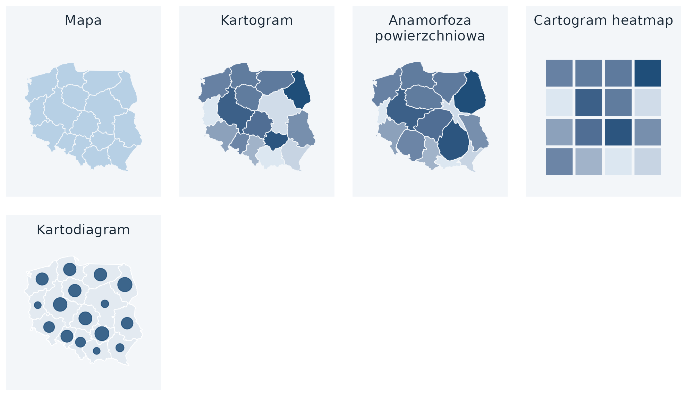
| Wykres | Objaśnienie | Przykłady i kod |
|---|---|---|
| mapa (Map) | obszary w ich położeniu geograficznym; barwa obszaru może przedstawiać wartość zmiennej (Sekcja 21.5). Funkcja: geom_sf() |
galeria; Sekcja A.8.1 |
| kartogram (Choropleth) | barwa obszaru przedstawia wartość względną odniesioną do pola odniesienia, np. odsetek osób w określonym wieku. Funkcja: geom_sf(aes(fill = )) |
galeria; Sekcja 5.7.3 |
| anamorfoza powierzchniowa (Cartogram) | obszary zniekształcone proporcjonalnie do innej wielkości, np. liczby ludności; nie występuje w skrypcie. Funkcja: cartogram::cartogram_cont() + geom_sf() |
galeria |
| cartogram heatmap | każdy obszar zastąpiony kwadratem o jednakowej wielkości, a barwa kwadratu przedstawia wartość; nie występuje w skrypcie. Funkcja: geom_tile() |
galeria (sześciokąty) |
| kartodiagram | znak umieszczony w położeniu obiektu przedstawia wartość zmiennej (wielkość znaku, Sekcja 5.7.5) albo strukturę zjawiska (kartodiagram strukturalny, np. wykresy kołowe, Sekcja 5.7.7); typ stosowany w skrypcie, spoza katalogu Wilkego (2019). Funkcja: geom_sf(aes(size = )); strukturalny: scatterpie::geom_scatterpie() |
galeria; Sekcja 5.7.5 |
Nazwy angielskie i polskie różnią się znaczeniem: ang. choropleth odpowiada polskiemu kartogramowi, a ang. cartogram oznacza anamorfozę. Jeśli barwa obszaru przedstawia wartość, która nie jest odniesiona do pola odniesienia, np. oczekiwaną długość życia, w skrypcie stosuje się nazwę mapa (Sekcja 21.5).
14.8 Niepewność
Wykresy niepewności przedstawiają zakres prawdopodobnych wartości oszacowania albo pomiaru, np. 95% przedział ufności współczynnika korelacji (Rozdział 11). Punktem odniesienia jest oszacowanie, a zakres przedstawiają słupki błędu (Rycina 14.13). Skrypt nie wykorzystuje wykresów niepewności, dlatego załącznik nie zawiera ich kodu.
Podobną formę graficzną mają w skrypcie wykresy opisujące zmienność obserwacji: średnia ± odchylenie standardowe (Rycina 15.10) i rozstęp w kolejnych latach (Rycina 15.12). Zakres na tych wykresach dotyczy wartości obserwacji w grupie, a na wykresach niepewności — oszacowania.
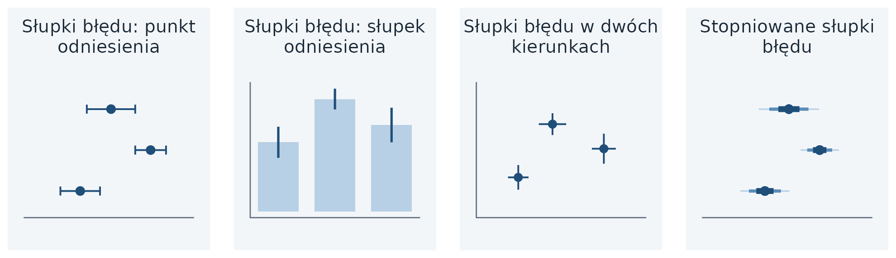
| Wykres | Objaśnienie | Przykłady i kod |
|---|---|---|
| słupki błędu (Error Bars) | odcinki odchodzące od punktu odniesienia, którym może być punkt albo słupek; przy dwóch zmiennych biegną w dwóch kierunkach (2D Error Bars). Funkcja: geom_errorbar() |
galeria |
14.9 Źródła
- Holtz Y. The R Graph Gallery: https://r-graph-gallery.com/.
- Holtz Y., Healy C., 2018. From Data to Viz: https://www.data-to-viz.com/.
- Wilke C.O., 2019. Fundamentals of Data Visualization, rozdział „Directory of visualizations”: https://clauswilke.com/dataviz/directory-of-visualizations.html.
- Piktogramy: opracowanie własne w
ggplot2, dane symulowane; granice województw: Natural Earth (domena publiczna).